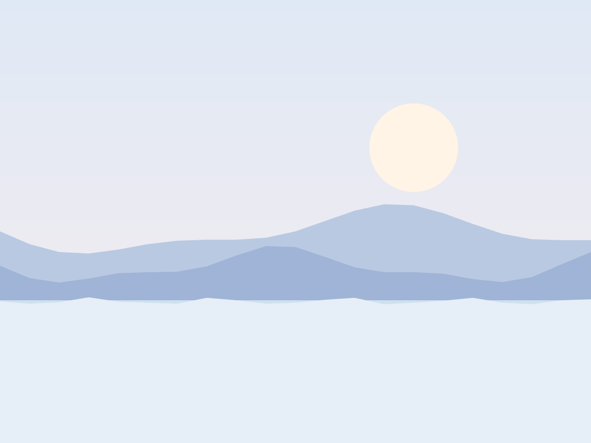
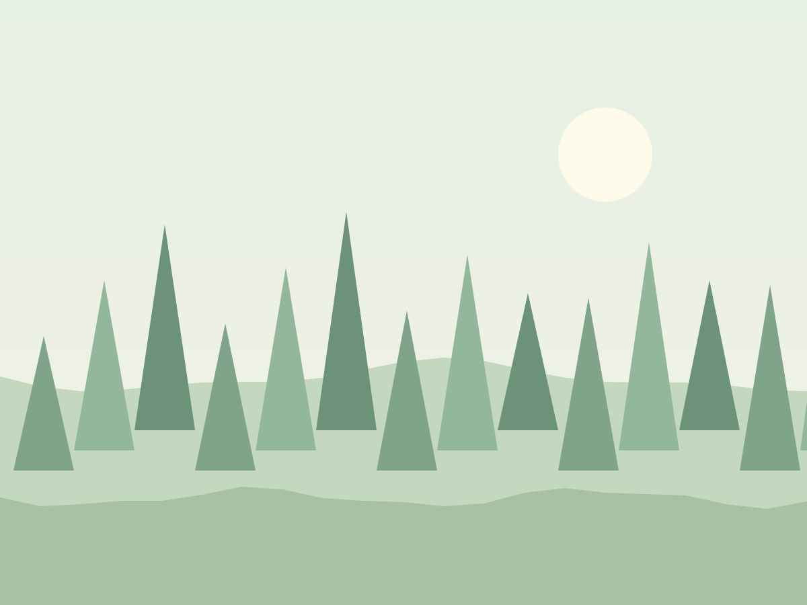

Les lacs alpins
Paris → Annecy → Lucerne · 9 jours

Des voyages en train de nuit, des haltes de trois jours, des carnets écrits à la main. L'Europe, à la vitesse d'une conversation.
Nous croyons qu'un voyage commence au moment où l'on regarde par la fenêtre. Pas d'avion, pas de course : des wagons-lits, des petits hôtels, et le temps de se perdre dans une ville avant d'en voir une autre.
Je vous propose la côte ligure : train de nuit Paris → Nice, trois nuits à Gênes, quatre aux Cinque Terre. 1 140 km en train, 82 kg de CO₂ au lieu de 410 en avion. Lucia, votre guide, valide d'ici ce soir.
L'IA propose, Lucia ajuste : les adresses, les horaires, la couchette du bon côté.
de CO₂ en moyenne par rapport au même voyage en avion.

Chaque itinéraire est accompagné par un guide qui connaît les couchettes par leur prénom.
Paris → Annecy → Lucerne · 9 jours

Nice → Gênes → Cinque Terre · 8 jours

Munich → Prague · 10 jours
Turin → Sienne → Florence · 11 jours

Barcelone → Séville · 12 jours
4,9 sur 5 sur 2 300 voyages. Survolez la colonne pour la mettre en pause.
« J'ai lu trois livres et parlé à plus d'inconnus qu'en dix ans. »Margaux, Toscane douce
« Le guide connaissait un café ouvert à 6 h à Lucerne. Inoubliable. »Pierre, Lacs alpins
« Les enfants n'ont pas demandé d'écran une seule fois. »Famille Nguyen, Bohême
« On a raté une correspondance. C'était le meilleur jour du voyage. »Aïcha, Andalousie